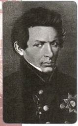
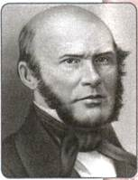
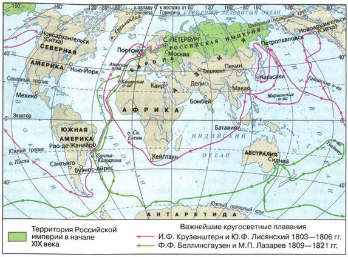
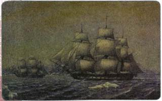
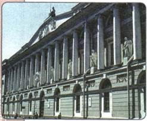
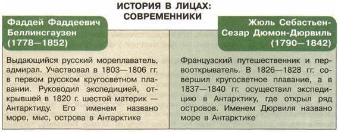

Материал для самостоятельной работы и проектной деятельности учащихся
Какие успехи были достигнуты в сфере науки и образования в России в первой половине XIX в.?
1. XIX век — золотой век русской культуры
Первая половина XIX в. по праву считается золотым веком русской культуры. Её развитие проходило под влиянием многих событий мирового значения, из которых наиболее мощными были Отечественная война 1812 г. и Заграничные походы русской армии. Литературный критик В. Г. Белинский писал, что именно с этого рубежа «начиналась новая жизнь для России», связанная главным образом с развитием в обществе «гражданственности и образования». «Гроза двенадцатого года» привела к росту национального самосознания, вызвала к жизни небывалый патриотический подъём.
На состоянии образования и культуры позитивно отразились и глубокие перемены, начавшиеся в экономике страны, в первую очередь промышленный переворот. Теснейшим образом он был связан с развитием российской науки и техники.
В области гуманитарных наук рост национального самосознания привёл к усилению интереса к отечественной истории. Большим событием культурной жизни была «История государства Российского» Н. М. Карамзина, первые 8 томов которой вышли в свет в 1816 г. Её автор стал первым отечественным историком, труды которого читали не только специалисты, но и широкая аудитория. Карамзин выступил с инициативой установить памятники-мемориалы замечательным людям: героям-киевлянам и владимирцам, защищавшим Русь в годы монгольского нашествия, а также К. Минину и Д. М. Пожарскому. Он предлагал собирать и записывать «устную историю» — воспоминания современников и участников событий.
Внимание общественности привлекала научная деятельность крупнейших историков, профессоров Московского университета Т. Н. Грановского и М. П. Погодина. Изучавший историю французской революции XVIII в. Грановский отмечал, что её лозунг «Свобода! Равенство! Братство!» является «высшим идеалом человечества». История разных стран и народов представлялась ему единым для всех путём к свободе. Погодин в научных трудах по истории Древней Руси, а также на страницах издававшихся им журналов «Московский вестник» и «Москвитянин» отстаивал идеи единения славянских народов.
В первой половине столетия начал свою плодотворную научную деятельность крупнейший российский историк С. М. Соловьёв.
2. Естественно-математические науки
Подлинный переворот в научных представлениях о природе пространства совершил в 1826 г. профессор Казанского университета Н. И. Лобачевский. Он создал новую геометрическую систему, названную неевклидовой геометрией. Это крупнейшее открытие стало основой математической базы современной физики. В 1802 г. петербургский профессор В. В. Петров продемонстрировал явление вольтовой дуги, а позже высказал идею о её применении для сварки металлов. Российский исследователь П. Л. Шиллинг сконструировал и испытал в 1832 г. первую линию электромагнитного телеграфа. Б. С. Якоби в 1834 г. изобрёл электродвигатель с вращающимся рабочим валом, а в 1838 г. — гальванопластику. Он первым в мире построил подземную кабельную телеграфную линию (связала Петербург с Царским Селом, имела длину 25 км). Крупнейший русский инженер и металлург П. П. Аносов изучал и внедрял в жизнь приёмы выплавки стали. В 1831 г. он первым в России применил микроскоп для исследования структуры стали, а в 1841 г. раскрыл давно утраченный секрет изготовления булатной стали.

Н. И. Лобачевский

Н. И. Пирогов
В 1830-х гг. российские механики, крепостные заводчиков Демидовых — отец и сын Черепановы построили первый в России паровоз и железную дорогу.
Расширялись и познания в области медицины. Многим Россия обязана выдающемуся деятелю Н. И. Пирогову, профессору Медико-хирургической академии. Н. И. Пирогов стал основоположником военно-полевой хирургии. В годы Крымской войны он впервые применил наркоз во время операции прямо на поле боя, использовал для лечения переломов неподвижную гипсовую повязку. Благодаря великому хирургу тысячи раненых остались живы, многие вернулись в строй.
В 1839 г. начала работать Пулковская обсерватория под Петербургом (построенная всего за четыре года) — одна из самых крупных и хорошо оснащённых для своего времени. Здесь немало открытий сделал один из крупнейших русских астрономов В. Я. Струве.
Авторитет российской науки был столь высок, что крупнейшие предприниматели считали честью оказывать ей материальную поддержку. С 1832 г. Академия наук ежегодно присуждала премии за наиболее важные научные открытия и изобретения. Премии назывались «демидовские» по имени мецената П. Н. Демидова, одного из самых богатых российских промышленников, который пожертвовал на эти цели значительные суммы. Большие средства на развитие отечественной науки выделяло и правительство.
3. Русские путешественники
В первой половине XIX в. Россия реализовала свою давнюю мечту — её корабли вышли в Мировой океан. В 1803 г. по указанию Александра I экипажи кораблей «Надежда» и «Нева» исследовали северную часть Тихого океана. Это была первая русская кругосветная экспедиция, продолжавшаяся три года. Её возглавил член-корреспондент Петербургской академии наук И. Ф. Крузенштерн — крупнейший мореплаватель и учёный-географ. В ходе плавания впервые было нанесено на карту более тысячи километров побережья острова Сахалин. Много интересных наблюдений оставили участники экспедиции не только о Дальнем Востоке, но и об островах центральной части Тихого океана, Аляске и Алеутских островах.
В 1819 г. ученику Крузенштерна Ф. Ф. Беллинсгаузену было поручено возглавить вторую кругосветную экспедицию на шлюпах «Восток» и «Мирный». Главной её целью являлось «приобретение полнейших познаний о нашем земном шаре» и «открытие возможной близости Антарктического полюса». В 1820 г. участниками экспедиции был открыт никому до этого не известный материк Антарктида. Продолжая плавание, русские путешественники открыли группу островов в архипелаге Туамоту, названную островами Россиян. Каждый из них по отдельности получил имя известного военного и морского деятеля нашей страны (Кутузова, Раевского, Барклая де Толли, Витгенштейна, Ермолова и др.).

Географические экспедиции первой половины XIX в.
Выдающийся мореплаватель и дипломат Е. В. Путятин в 1822—1825 гг. совершил ещё одно кругосветное путешествие и оставил потомкам описание увиденного. В 1855 г. на фрегате «Паллада» он отплыл во главе дипломатической миссии в Японию. Путятину удалось заключить договор с Японией, он стал одним из первых русских людей, кому удалось побывать в закрытой для европейцев Японии.

«Восток» и «Мирный» у берегов Антарктиды. Художник М. Семёнов
Крупнейшим исследователем российского Дальнего Востока был адмирал Г. И. Невельской. Ему удалось в ходе двух экспедиций открыть ряд новых, неизвестных прежде территорий и войти в низовья Амура, где он основал в 1850 г. поселение Николаевский пост (современный город Николаевск-на-Амуре). Невельской доказал, что Сахалин является островом, а не полуостровом, как считалось ранее. Берега Амура также исследовал генерал-губернатор Восточной Сибири Н. Н. Муравьёв-Амурский.
В 1845 г. указом Николая I было образовано Русское географическое общество. Оно должно было «собирать, обрабатывать и распространять в России географические, этнографические и статистические сведения вообще и в особенности о самой России, а также распространять достоверные сведения о России в других странах». Важнейшим направлением деятельности общества стала поддержка учёных-географов, организация исследовательских экспедиций в разные уголки России и мира.
4. Реформы Александра I в области образования
В начале XIX в. в России окончательно сложилась система высшего, среднего и начального образования. В 1802 г. для управления ею было создано Министерство народного просвещения.
Проведённая в начале века реформа привела к созданию в каждом губернском городе гимназии, а в каждом уездном городе уездного училища. Приходские училища создавались в сельской местности. В них принимались дети «всякого состояния», без различия «полу и лет». Правда, несмотря на провозглашённую «непрерывность» образования, для детей крепостных были доступны только приходские училища. В гимназии путь им был заказан.
В 1811 г. для детей дворян был открыт Александровский (Царскосельский) лицей, в котором обучались представители высшего общества (в их числе А. С. Пушкин и др.). Этот первый в России лицей стал не только самым престижным учебным заведением, но и центром свободомыслия.
Большое внимание правительство уделяло развитию высшего образования. В первые два десятилетия XIX в. были открыты пять новых университетов: Дерптский, Казанский, Харьковский, Виленский, Петербургский. По мере роста сети училищ и гимназий возникла потребность в подготовке большего числа учителей, появились первые педагогические вузы (в Москве и Петербурге). Вышедший в 1804 г. университетский устав регулировал деятельность университетов. Он же определил, что педагогические институты для подготовки учителей должны быть открыты при каждом университете.
5. Образовательная политика Николая I
В 1820—1850-е гг. отношение правительства к нуждам образования несколько изменилось. Оно стало уделять больше внимания формированию нравственности, основанной на религиозных началах.
При Николае I сохранились все типы школ, но каждый из них стал сословно-обособленным. Приходские одно- и двухгодичные училища предназначались только для детей из «низов». В них обучали Закону Божьему, грамоте и арифметике. Уездные трёхгодичные училища предназначались для детей купцов, ремесленников, мещан. Здесь изучали русский язык, арифметику, геометрию, историю и географию. В семиклассные гимназии могли поступать дети дворян, чиновников, купцов первой гильдии. Детям крепостных крестьян обучение в гимназиях и университетах было запрещено, что повторил указ 1827 г.
Однако, несмотря на то что образование было сословным, число учебных заведений на протяжении правления Александра I и Николая I неуклонно расширялось. Если в начале XIX в. в стране существовало всего 158 училищ, то к середине XIX в. около 130 начальных школ было уже в каждой губернии.

Публичная библиотека в Петербурге. Архитектор К. И. Росси
Увеличивалось и число высших учебных заведений. В 1833 г. был открыт университет в Киеве. Особенно быстрыми темпами развивались ведомственные школы (для обучения растущих штатов государственных чиновников), начали работать технические вузы: Петербургский практический технологический институт (1828), Московское ремесленное училище (1830).
Несмотря на то что цензура бдительно следила за тем, чтобы в выпускаемых книгах, газетах и журналах не содержалось «крамольных мыслей», тиражи разнообразной литературы росли. В 1840-е гг. широкую известность получили книги издательства А. Ф. Смирдина, выпустившего в свет более 70 собраний сочинений крупнейших русских писателей. Эти книги стоили недорого и были доступны самым широким слоям населения.
В большинстве губернских и уездных городов по инициативе общественности создавались библиотеки. В 1852 г. для широкой публики был открыт Эрмитаж, ранее существовавший как дворцовый музей. С 1856 г. начал собирать получившую в дальнейшем мировую известность коллекцию русской живописи меценат П. М. Третьяков.

ПОДВЕДЁМ ИТОГИ
Патриотический подъём, вызванный событиями 1812 г., перемены в экономике стали причинами обновления духовной жизни страны, крупных успехов российских учёных, способствовали развитию системы образования и просвещения народа.
Вопросы и задания для работы с текстом параграфа
1. Назовите события, оказавшие определяющее воздействие на развитие русской науки и культуры в первой половине XIX в. 2. Какие достижения отечественной науки вы считаете главными? Свой ответ аргументируйте. 3. Какую роль в развитии общественной мысли играли труды историков? 4. Какое значение для развития науки имела экспедиция И. Ф. Крузенштерна? 5. Сформулируйте главную цель деятельности Русского географического общества. 6. Докажите, опираясь на текст параграфа, что образование в России в первой половине XIX в. имело сословный характер.
Работаем с картой
1. Покажите на карте города России, в которых к середине XIX в. существовали университеты.
2. Покажите на карте маршруты русских мореплавателей и путешественников первой половины XIX в. и территории, отрытые ими.
Думаем, сравниваем, размышляем
1. Чем вы можете объяснить усиление материальной поддержки науки со стороны предпринимателей? На конкретных примерах покажите, как открытия и изобретения учёных первой половины XIX в. были связаны с потребностями экономики России.
2. Охарактеризуйте систему учебных заведений в России в первой половине XIX в.
3. Используя дополнительные материалы, составьте биографический портрет одного из русских учёных первой половины XIX в., расскажите о его открытиях.
4. Используя сеть Интернет, выясните, какие выдающиеся деятели науки и культуры обучались в Царскосельском лицее. 5. Узнайте, почему издательство А. Ф. Смирдина было очень популярным не только среди читателей, но и среди писателей и поэтов.